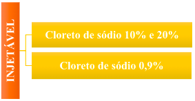
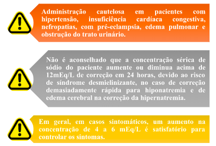
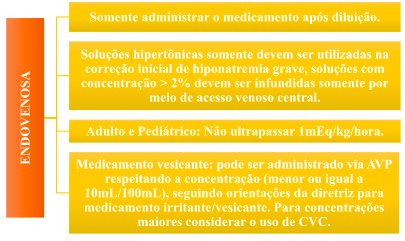
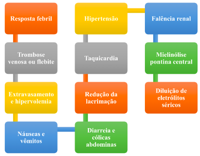
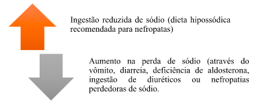
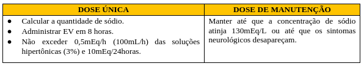
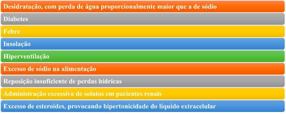
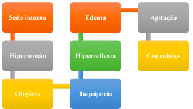
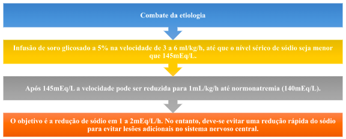

Sódio – Cloreto de sódio
Sumário:
- Apresentação da droga
- Indicação
- Contraindicação
- Cuidados específicos e monitoramento
- Dose
- Administração
- Interação medicamentosa
- Efeitos adversos
- Estabilidade/Conservação
- Toxicologia
- Uso durante a gestação
- Hiponatremia
- Definição
- Causas
- Sinais e sintomas
- Tratamento
- Hipernatremia
- Definição
- Causas
- Sinais e sintomas
- Tratamento
Apresentação da droga
Indicação

- Fonte de cloreto, sódio e água para hidratação, nos casos de distúrbios do equilíbrio hidroeletrolítico.
- Tratamento de choque hipovolêmico.
- Base para preparações de soluções parenterais compatíveis.
Contraindicação
- Hipersensibilidade aos componentes da droga.
- Hipernatremia.
- Retenção hídrica.
- Hipercloremia.

Cuidados específicos e monitoramento
Dose
- A definição da dosagem deste medicamento depende da:

Administração
Interação medicamentosa
- Incompatibilidade com anfotericina B, ocorrendo precipitação desta substância, e com o glucagon. Consultar um farmacêutico sempre que necessário.
- Aconselha-se cautela em pacientes tratados com lítio.
- Alguns medicamentos, principalmente corticosteróides, podem reagir com este produto, aumentando seus efeitos adversos.
Efeitos adversos
Estabilidade/Conservação
- A solução injetável de cloreto de sódio tem duração de 24 horas em temperatura ambiente (entre 15°C e 30°C).
- É uma solução estéril e apirogênica, logo, não proceda em hipótese alguma a guarda e/ou conservação de volumes restantes das soluções utilizadas, devendo as mesmas serem descartadas.

Toxicologia
- Está, na maioria dos casos, relacionada ao aumento rápido das concentrações séricas de sódio.
- O monitoramento de sódio e a avaliação do paciente são extremamente importantes.
- O aumento rápido dos níveis de sódio na correção da hiponatremia crônica está relacionado à desmielinização da ponte, conhecida como mielinólise pontina, com graves sequelas neurológicas e óbito.
Uso durante a gestação

Categoria C: Não há estudos suficientes para certificar a segurança do medicamento durante a gravidez. O medicamento deve ser administrado apenas se o benefício potencial justificar o risco.
Hiponatremia
- Concentração de sódio abaixo da normalidade (< 135 mEq/L).
- Geralmente a hiponatremia é assintomática.
- Ao atingir valores inferiores a 125 mEq/L, manifestam importante quadro sintomatológico (manifestações clínicas).
Causas
Atenção: A hiponatremia de diluição desenvolve-se pela sobrecarga hídrica que, quase sempre, advém de uma inadequação terapêutica, que ocorre quando o organismo perde secreção contendo sódio e a reposição se faz apenas com solução glicosada ou com soluções hipotônicas, também é identificado esse quadro na insuficiência cardíaca congestiva, cirrose hepática, doença renal com oligúria, secreção inadequada do hormônio antidiurético e doença de Addison.
Sinais e sintomas

Tratamento
Adulto – Hiponatremia aguda (abaixo de 130mEq/L)
Cálculo de água corporal total
Homens
- Adultos: Peso (Kg) x 0,6;
- Idosos: Peso (Kg) x 0,5.
Mulheres
Pediatria - Hiponatremia aguda (abaixo de 120mEq/L)
- Peso (Kg) x 0,6.
Na hiponatremia por diluição, que corresponde à intoxicação hídrica, o tratamento visa sobretudo à eliminação do excesso de água mediante uso de diurético osmótico (Manitol), com reposição de sódio somente em casos com concentração abaixo de 110mEq/l, observando se cuidadosamente sinais de insuficiência cardíaca.
Hipernatremia
- Alta concentração de sódio (acima de 145 mEq/L), em comparação a quantidade de água presente no organismo.
- A hipernatremia é menos frequente que a hiponatremia.
Causas
Sinais e sintomas
Observação: Em pacientes com ingestão inadequada de água, a hipernatremia pode causar sintomas respiratórios como edema pulmonar, embolia ou pneumonia.
Tratamento
